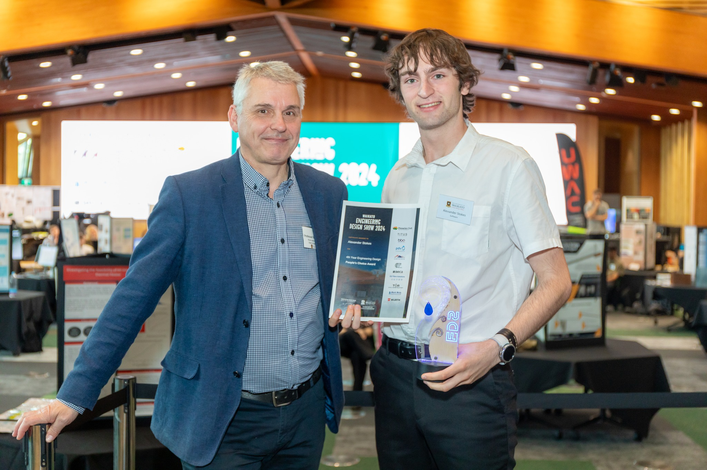

Our Story
Revolutionising campus navigation through innovative virtual mapping technology
Our Journey
CampusVirtual was conceived by a frustrated university student struggling to find his classroom. During his final year at university, Alexander developed this software to map the University of Waikato, soon realising its potential for use in complex environments such as hospitals, airports, and other places where it is easy to lose your way. By employing state-of-the-art computer vision technology, CampusVirtual created a virtual tour that is not only accurate but also easy to navigate.
After presenting his prototype at the University of Waikato's Engineering Design Show, Alexander was awarded the People's Choice Award for his project, and even attracted interest from the local newspaper.
Our Product
Compared to existing virtual tour technology, CampusVirtual offers a large-scale and more straightforward creation process. In short, CampusVirtual enables users to create virtual tours of any size and complexity with ease.
360 Video Mapping
Data collection takes as long as it takes to walk through your building/campus.
Pathfinding
Students, teachers, patients, and employees can find how to get to any location within your campus.
Large-scale
Capable of serving over 64 hectares of campus.
Customisable
Users can customise the tour to their liking, including noting room names, seeing where you are on a floor, and searching across multiple buildings.
Mobile-friendly
CampusVirtual is usable even on mobile devices, making it easy to use on the go.
Accessibility
CampusVirtual is accessible to people with disabilities, providing a seamless experience for everyone, even allowing searches for step-free routes.
Upgradeability
Over time, we can update the tour to reflect changes in your campus, including adding new rooms or blocking off restricted areas.

Contact Us
Get in touch with us. We would love to hear from you!
hi@campusvirtual.io